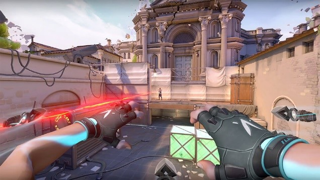

La mezcla de varias mecánicas resulta espectacular. Reseña: Valorant

Valorant es un juego de disparos conocido como un “shooter tactico” de 5vs5 que implementa el uso de personajes llamados agentes, que cuentan con habilidades que hacen del juego algo increíble. Si bien la primera experiencia que obtuve al adentrarme en jugar valorant fue agridulce; al no haber jugado videojuegos FPS (first person shooter) durante mi vida el adaptarme a las mecánicas que ofrece el juego fue difícil. Un juego que durante el lanzamiento de la beta abierta (en abril de 2020) el mundo lo vio con malos ojos, y lo llamaban el mal resultado de combinar las mecánicas de juego generales de CS:GO y Overwatch; pero que durante
el desarrollo y actualizaciones constantes que salieron durante la beta abierta y posteriormente en su lanzamiento oficial (2 de junio de 2020) han demostrado que es un juego que ha llegado para quedarse. Si bien mi experiencia inicial no fue la mejor, el proceso de irse adaptando y mejorando en cada partida ha sido totalmente gratificante; el hecho de contar con múltiples agentes que permiten que cada partida sea totalmente diferente, y que las habilidades de los agentes en conjunto con sus ultimates, te hacen estar alerta en todo momento sin mencionar que lo primordial es saber disparar.
En la actualidad, Valorant se ha vuelto mi juego favorito y el poder jugarlo con amigos hace la experiencia de juego sea super agradable y que de seguro hare que pasen buenos ratos, con momentos de tensión y de alegría por el hecho de ganar la partida.